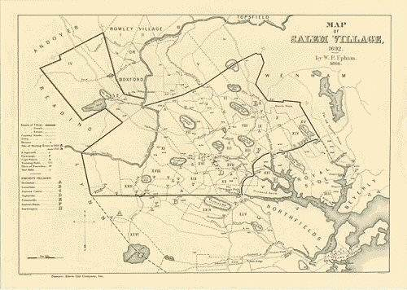
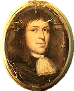
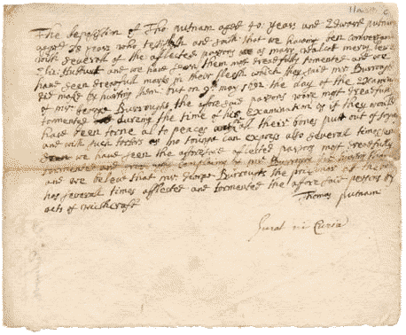
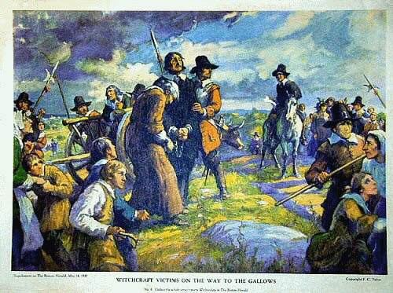
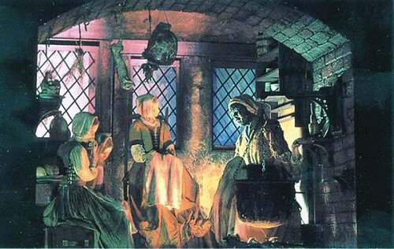
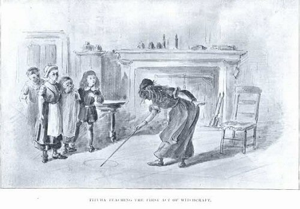
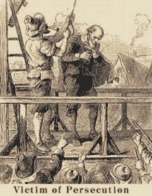

The Witches of Salem The Witches of Salem
|
|

|

Human and Political Conflicts
|
|
In the late 17th century, Salem was divided into two distinct parts:
the city of Salem, a noble and prosperous economic center, and Salem Village (or Salem Farms) consisting
of a very puritanical farming community.
The large and influential Putnam family owned the biggest area of farmland in Salem Village.
Its members strongly desired the separation of Salem’s two sections, as they believed that the city’s
residents were straying further and further away from the precepts of the Bible. They therefore encouraged
Salem’s villagers to found their own church.
The first pastor to this new church, Reverend George Burroughs, held office for only two years.
In fact, a shady story of unpaid debts put him on bad terms with Sergeant Thomas Putnam, the powerful
head of the Putnam family, thereby forcing him to leave his ministry.

In 1689, the Putnam family called upon Samuel Parris, the head
of the Parris family, and offered him the post of Salem Village’s new minister. From that point on,
the two families held very close ties.
In 1691, despite this friendship, a village committee
voted against levying a tax guaranteeing steady income to Samuel Parris. Embittered, the minister
avenged this refusal by proclaiming in his sermons that a conspiracy against the church had been
hatched within the village. He even went so far as to assert that the Devil had taken possession
of certain villagers—this a year before the eight girls’ accusations!

In 1692, at the height of the mass hysteria, it was reported
that the Putnam and Parris families wielded enormous influence over the witch trials’ developments.
On the one hand, five of the eight "afflicted" girls were affiliated with the two families
(Elizabeth Parris and Abigail Williams were, respectively, daughter and niece to Samuel Parris,
while Ann Putnam Jr., Mary Walcott and Mercy Lewis were daughter, niece and servant to Thomas Putnam).
These five were, moreover, the most fervent of the eight accusers.
On the other hand, the majority of those accused were either enemies of or maintained antagonistic
relationships with the two clans (for example: Sarah Good, Sarah Osborne, Rebecca Nurse, George Burroughs, and Giles and Martha Corey).

Without accusing the Parris and Putnam families of having
premeditated the hysterical escalation of incriminations, it is clear that the two families
largely benefited from fanning the flames, thereby settling old scores with their rivals.
Beginning in October 1692, moreover, Samuel Parris became the focus of the hostility of villagers
who had fallen victim to his machinations, and despite the timid excuses he made in 1694,
he was forced to leave Salem for good in 1697.
|
Scientific Ignorance
|
|
Assuming that the accusers were manipulated by those around
them, the question remains how eight girls from Puritan families were able to exhibit such insane
behavior simultaneously. It should be recalled that none of the many doctors consulted at the
time managed to make a diagnosis.
Nearly 300 years after the fact, New York-based behavioral
psychologist Linda Caporael has drawn attention to similarities between the Salem girls’ symptoms
and those exhibited by people sick from ingesting ergot, the spores of a parasite that infects
rye grain.
Scientific studies of this fungus show that ergot is a polycyclic alkaloid naturally
derived from lysergic acid, or none other than LSD. It directly effects the nervous system,
provoking violent muscular contractions, hallucinations and the feeling of insects crawling under
the skin.
Furthermore, ergot thrives in the spring or summer during hot, humid and rainy
weather; the diary of one Salem resident reveals how these were the exact climactic conditions
prevailing in 1692. When one considers that Tituba, the Parris family servant, was in the habit
of gathering the eight Salem girls around her and feeding them a "witchcake" made from rye,
one can reasonably assume that the girls had simply become intoxicated by this hallucinogenic
fungus, and were in no way "bewitched."
|
The Influence of Religion and Fear of the Other
|
|
Before Betty (Elizabeth) and Abby (Abigail) showed the
first signs of trouble, Tituba would spend hours telling them stories about her native country.
Sometimes, secretly, the servant would perform voodoo magic tricks for them or tell their futures.
The girls enjoyed this so much that they were unable to keep quiet about it for very long; they
soon shared their secret with their friends. This is how the black slave managed to assemble the
eight future "possessed" girls around her several times a week.

One day, when Abby was peacefully enjoying a drink, she saw a
ghost appear in the form of a coffin floating in her glass. No doubt the initial hallucinatory
effects of the rye ergot were the cause, fueled by Tituba’s fantastic stories. The two cousins
believed, however, that they were sinking into damnation.
Like everyone else at the time, the two girls considered
telling the future as witchcraft, and therefore a very grave sin. In fact, divination was associated
with the betrayal of God and pacts with the devil. Believing themselves damned for having listened
to Tituba and egged on by those around them, they eventually accused the slave of witchcraft.

For a long time witchcraft had been viewed as a set of
personal beliefs and superstitions with no harmful repercussions. Beginning in the 17th
century, however, it became considered an "anti-religion" and a "criminal act" against society.
From that point on, all those who did not conform to social norms were subject to accusations
of witchcraft.

Possessing little or no education, the poor tended to have a
primitive, naïve and easily influenced state of mind. The majority of them poverty-stricken, the
villagers of Salem were deeply impressed by the eight girls’ inexplicable behavior. Thoroughly
terrified by Tituba’s statements during her cross-examination, most villagers believed "in good faith"
that they had been stricken with a diabolical curse. This terror easily explains the mass hysteria
which led them to suspect anyone who looked physically different or behaved abnormally of
engaging in witchcraft.
Since the dramatic events in Salem, no other
person has been condemned for witchcraft in America. Salem Village, separated from the city
of Salem in 1752, is today the city of Danvers. However, this separation has not erased
the scars of the past. For more than three centuries, historians, sociologists, psychologists
and others continue their research, seeking to uncover and comprehend the whole truth.
Through their work, they serve as a constant reminder of how political pettiness, family
quarrels, religious fanaticism, delirious imaginations and the fear of the other can lead
to such tragic consequences.
|
|